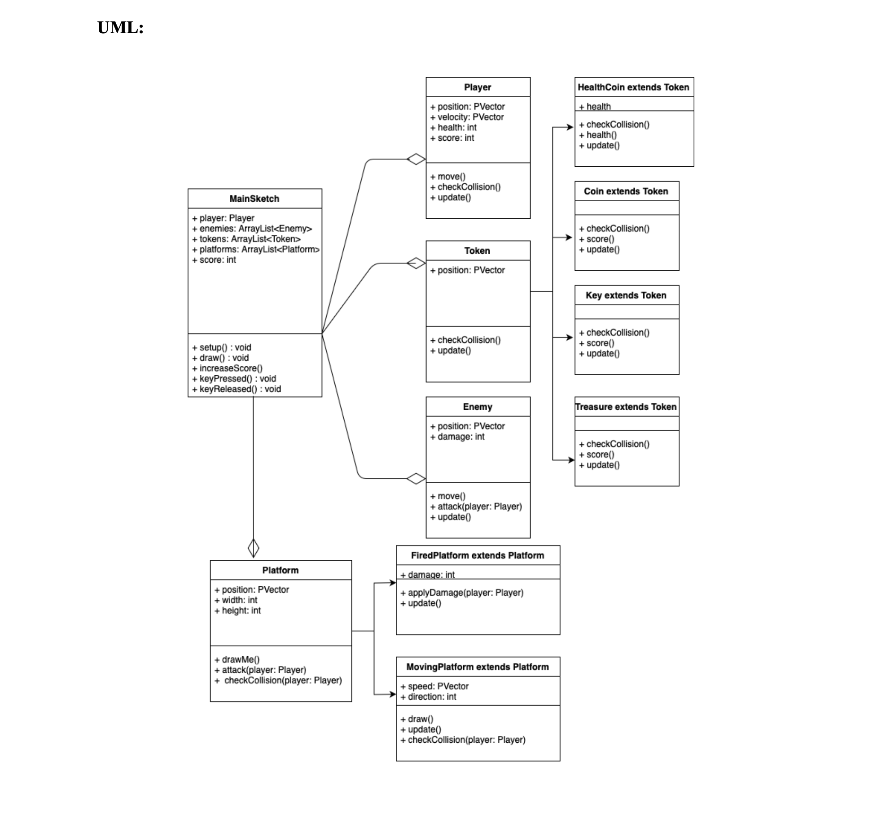
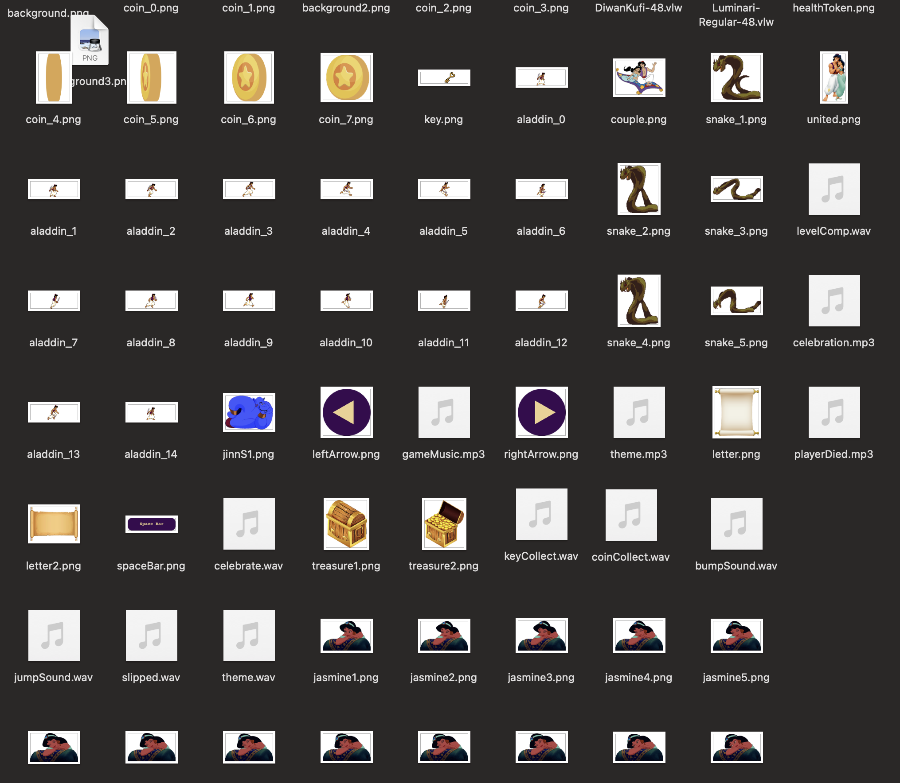
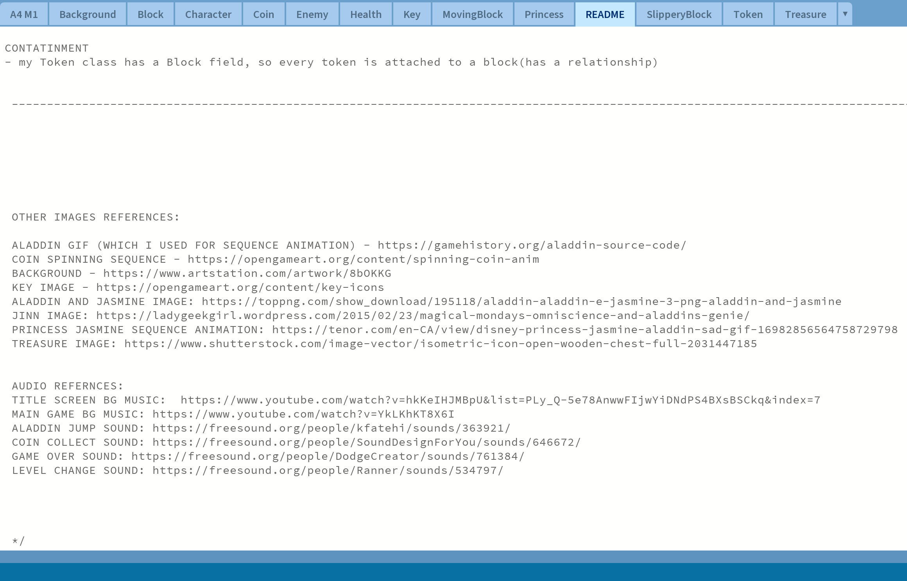
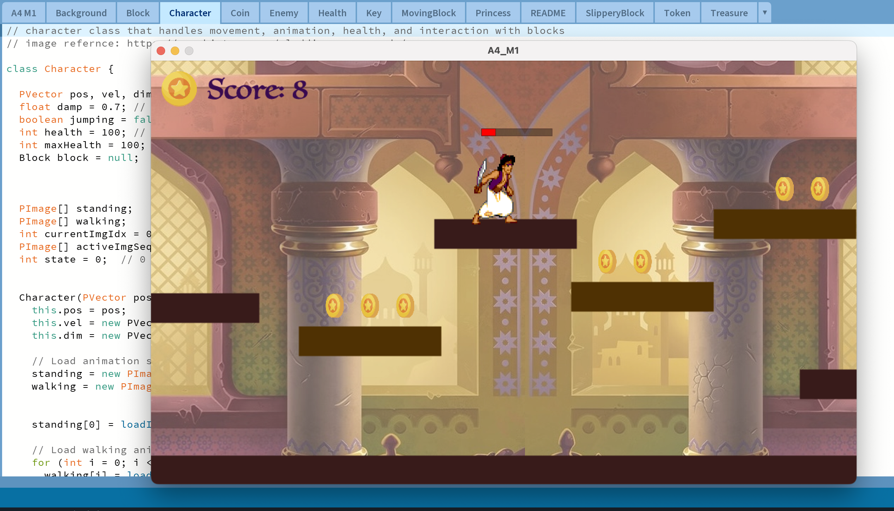

Aladdin’s Treasure Hunt
Project Overview: Aladdin’s Treasure Hunt is a side-scrolling platformer created for IAT 167: Digital Games. The project focused on designing and programming a multi-level game in Processing using object-oriented programming and core gameplay mechanics.
Context: The assignment required students to build an original interactive game that demonstrated level progression, collectibles, hazards, and structured programming logic.
My Contribution: I designed the gameplay structure, developed the narrative and level flow, implemented character movement and collisions, and refined the overall experience through testing and iteration.
Process
1. Planning and Structure


I began by planning the game concept through sketches, a proposal, and a UML diagram. This stage helped define the narrative, level progression, and class relationships before implementation began.
2. Asset Preparation and Visual Design


Next, I organized the visual and audio assets for the game. I combined self-made interface elements with adapted external sprites and documented all borrowed resources to keep the project organized and properly referenced.
3. Development and Testing


I then built the game systems using Java in Processing, including movement, collectibles, enemies, and level transitions. After the core mechanics were working, I tested the game repeatedly to refine collisions, pacing, and overall gameplay flow.
Problems and Resolutions
One challenge was balancing self-made assets with borrowed visuals while still keeping the game cohesive. Another challenge was refining collisions and level transitions so the game felt playable and structured. Repeated testing and clearer class organization helped resolve these issues.
Evaluation
This project strengthened my understanding of object-oriented programming, gameplay logic, and iterative development. It also showed me the importance of planning structure early and creating more original visual assets in future projects.